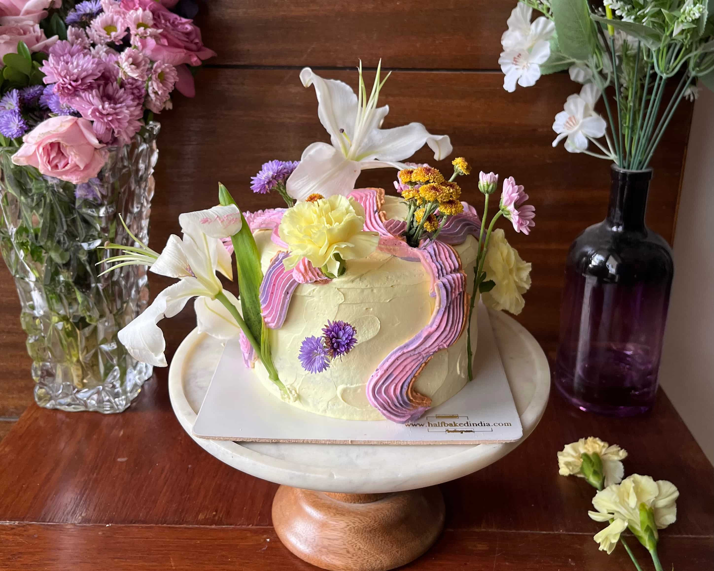
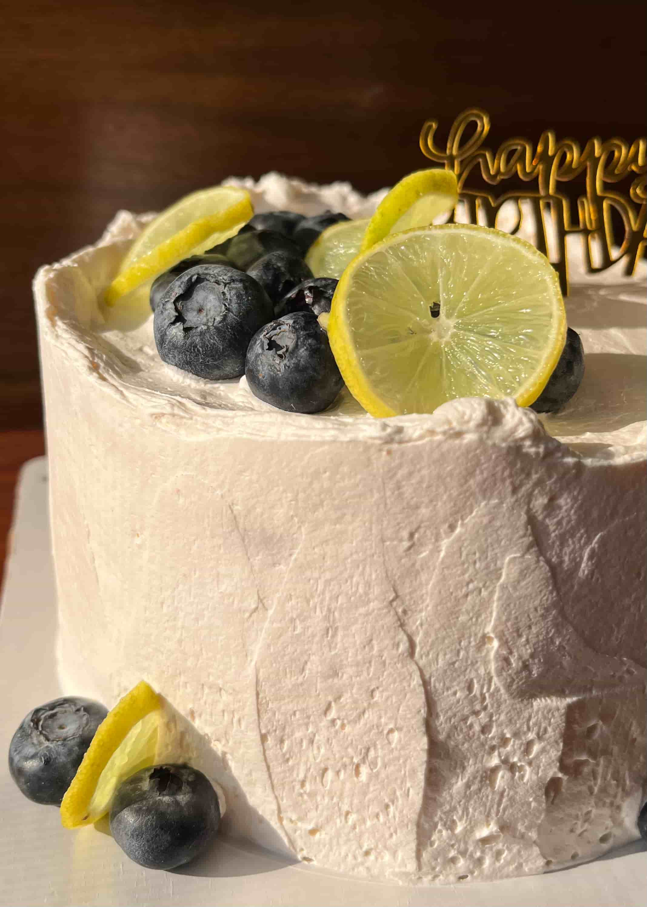
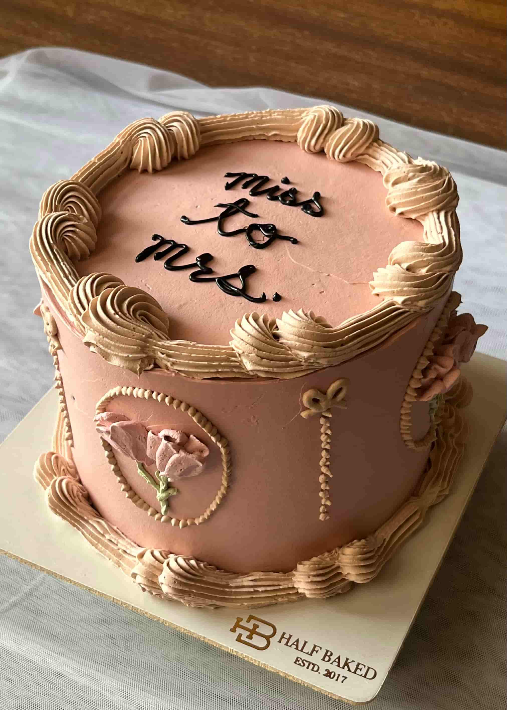
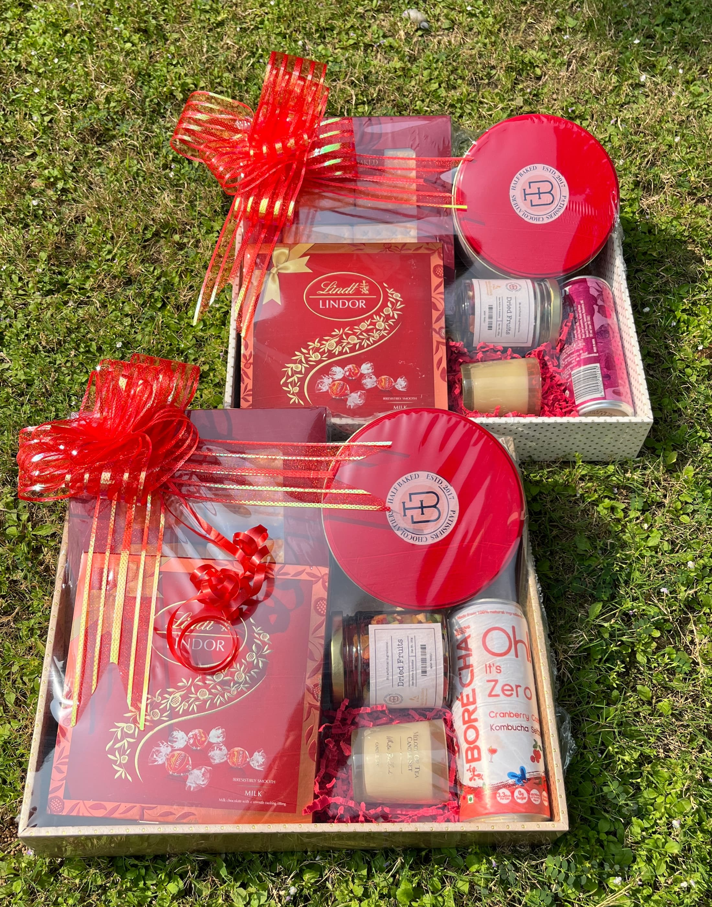

Same-day delivery, endless personalisation, and cakes baked fresh only after you order. Here's everything you need to know.
Whether it's a milestone birthday, an intimate anniversary dinner, a corporate celebration or just a Tuesday that deserves something special — a custom cake has a way of turning any moment into a memory. At Half Baked, we've spent nearly a decade perfecting the art of made-to-order cakes in Chandigarh, and in that time we've learned that no two cakes — and no two customers — are ever quite the same. This guide is everything you need to know about ordering a fully personalised, custom-designed cake in Chandigarh, from flavour selection all the way to same-day doorstep delivery.
Chandigarh's bakery scene has evolved dramatically over the past few years. Customers today aren't just looking for a vanilla sponge with buttercream — they want themed birthday cakes, photo cakes, character cakes, pull-me-up cakes, pinata cakes, and intricate designer creations that match a colour palette or a party theme down to the last detail. At Half Baked, we offer all of that and more, with one promise that sets us apart: every single cake is baked fresh, only after you place your order.
Chat with us on WhatsApp and we'll help you design the perfect cake.
A custom cake isn't just a cake with your name on it. It's a cake designed from scratch around your specifications — the flavour combination, the frosting type, the size, the theme, the colour scheme, the decorations, and even dietary requirements like eggless, vegan or gluten-free. When you order a custom cake from Half Baked, you're collaborating with our pastry team to bring a vision to life — whether that vision is a four-tier floral wedding cake or a minimalist, single-tier cheesecake with a hand-lettered topper.
Unlike supermarket cakes that sit in a refrigerator for days, every Half Baked cake is made to order and baked fresh the same day it's delivered. This isn't just a quality commitment — it's what the name stands for. We bake when you order, every single time, without exception. The result is a cake that tastes as good as it looks, with a texture and freshness that mass-produced bakeries simply cannot match.

Custom cakes crafted fresh to order at Half Baked, Chandigarh.
We offer a wide range of cake bases to suit every palate. Our most popular flavours for custom cakes include dark chocolate, vanilla bean, strawberry, blueberry, red velvet, mango, lemon, and coffee. For customers looking for something more adventurous, we also create Burnt Basque Cheesecake in custom sizes, tiramisu cakes, Biscoff layer cakes, rasmalai cakes, and gulab jamun cakes — fusion flavours that have become cult favourites in Chandigarh and across Tricity.
All of our custom cakes are 100% eggless by default — that's been our standard since day one. We firmly believe that eggless cakes can be just as indulgent, moist and flavourful as their conventional counterparts, and our bestseller list proves it. For customers following a vegan lifestyle, we offer fully plant-based custom cakes made without any animal products, including dairy-free frostings and fillings. We also offer gluten-free custom cakes for customers with dietary sensitivities or coeliac conditions, baked carefully with dedicated equipment to avoid cross-contamination. Whatever your dietary requirement, please mention it when you place your order and we'll take care of the rest.
💡 All Half Baked cakes are eggless by default. Vegan and gluten-free options are available — just let us know when ordering.
From simple and elegant to wildly elaborate — we do it all. Our most requested custom cake designs in Chandigarh include floral cakes, photo cakes, character cakes (superheroes, cartoons, anime), theme birthday cakes (travel, sports, music, fashion), pinata cakes, pull-me-up cakes, mirror glaze cakes, Korean buttercream cakes, and minimalist wedding cakes. We work with you to understand your vision, match colours to your theme, and deliver a cake that looks exactly how you imagined — or even better.
Browse our latest custom cakes on Instagram before placing your order.

From floral designs to themed creations — our custom cakes are made entirely to your brief.
One of the most common questions we get asked is: "Can I get a custom cake delivered the same day?" The answer, for most of our cake range, is yes. Half Baked offers same-day custom cake delivery across Chandigarh, including all sectors, Sector 26, Sector 17, Pinjore, and surrounding areas within city limits. To qualify for same-day delivery, we recommend placing your order in the morning — the earlier the better, so our team has enough time to bake, decorate and deliver your cake while it's at peak freshness.
For highly complex or multi-tier custom designs, we may need a lead time of 24 to 48 hours to ensure the quality and detail you deserve. When you reach out to us, we'll always be upfront about what's achievable within your timeline. Our goal is to say yes wherever we can — and to be honest with you when something needs a little more time to be done right.
Same-day delivery available across Chandigarh. Contact us to arrange delivery in surrounding areas.
We understand that great cake shouldn't be limited by city boundaries. That's why Half Baked also offers custom cake delivery to Mohali, Panchkula, Zirakpur and New Chandigarh. Delivery to these areas is available on request — simply call us or WhatsApp us directly to discuss your order details, delivery timing and any additional delivery charges that may apply. Our team will work with you to ensure your custom cake arrives safely and on time, no matter which part of Tricity you're in.
For outstation deliveries, we recommend placing your order at least a day in advance to allow us to coordinate logistics and ensure the cake travels safely without compromising on presentation or taste. Get in touch with us and we'll plan it out together.
Place your order on Zomato or contact us directly to discuss your custom requirements.
Ordering a custom cake from us is simple and straightforward. Here's how it works:
Step 1 — Get in touch. WhatsApp us at +91 98154 38880 or call us directly. Share the details of your order — the occasion, flavour preferences, design inspiration (a photo or a description works perfectly), number of servings, and your preferred delivery date and time.
Step 2 — We confirm and quote. Our team will review your requirements and get back to you promptly with a price and confirmation of the timeline. For custom designs, we may ask for reference images or further details to make sure we get it exactly right.
Step 3 — We bake, you wait (not for long). Once your order is confirmed, our pastry team gets to work. Your cake is baked from scratch, fresh, only after your order is placed. No shortcuts, no pre-baked sponges sitting in a freezer.
Step 4 — Doorstep delivery. Your custom cake is carefully packaged and delivered to your address in Chandigarh on time. For Mohali, Panchkula, Zirakpur and New Chandigarh deliveries, we coordinate timing with you directly to ensure a smooth handover.

Every custom order is packaged with care for safe delivery across Chandigarh and Tricity.
We've made custom cakes for nearly every occasion imaginable. Birthday cakes are our bread and butter — whether it's a first birthday smash cake, a teenage character cake, or an elegant adult birthday creation. We also create wedding cakes and engagement cakes in Chandigarh, working with couples to design show-stopping centrepieces that match their décor and taste preferences. Our baby shower cakes, graduation cakes, farewell cakes and anniversary cakes are all made with the same care and attention to detail.
For businesses, we offer corporate custom cakes for office celebrations, product launches, team milestones and client gifting — complete with logo toppers, brand colours and personalised messaging. Bulk orders for corporate events are welcome; get in touch to discuss pricing and lead times for larger quantities.
🎂 From first birthdays to golden anniversaries — Half Baked has made custom cakes for every milestone. Whatever yours is, we'd love to be part of it.
There are plenty of bakeries in Chandigarh, but very few that combine genuine customisation, same-day delivery, fresh baking and eggless options all under one roof. Half Baked was built on the belief that a great cake should never be a compromise — not on flavour, not on design, and not on freshness. We've served over 10,000 cakes across Tricity, maintained a 4.6 star average rating on Zomato, and earned over 1,000 five-star reviews from customers who keep coming back.
Our team is constantly experimenting with new flavours, techniques and design trends — from trending kunafa cakes to pistachio Dubai chocolate-inspired creations — so your custom cake can be as on-trend or as timeless as you want it to be. Whatever you're imagining, we're excited to make it happen.
Reach out on WhatsApp, call us, or browse our menu on Zomato to get started.